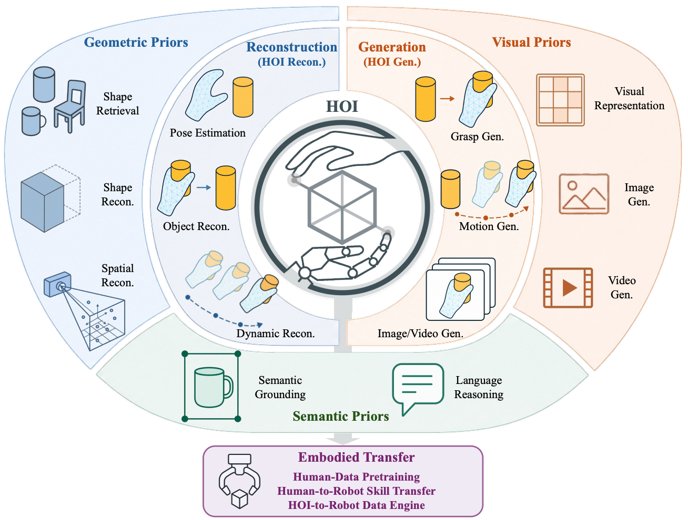
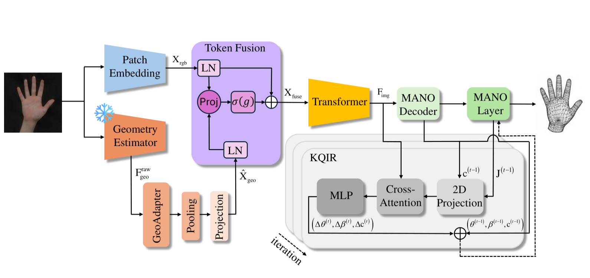
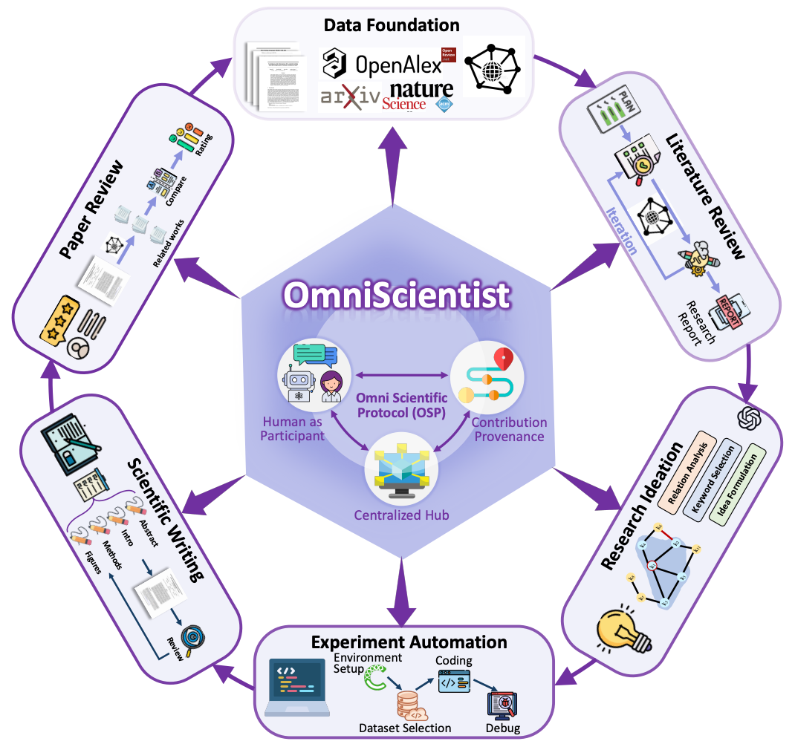
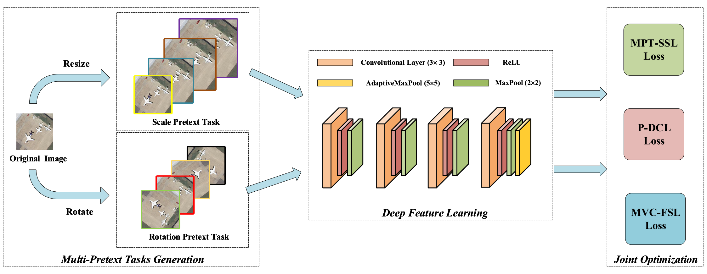
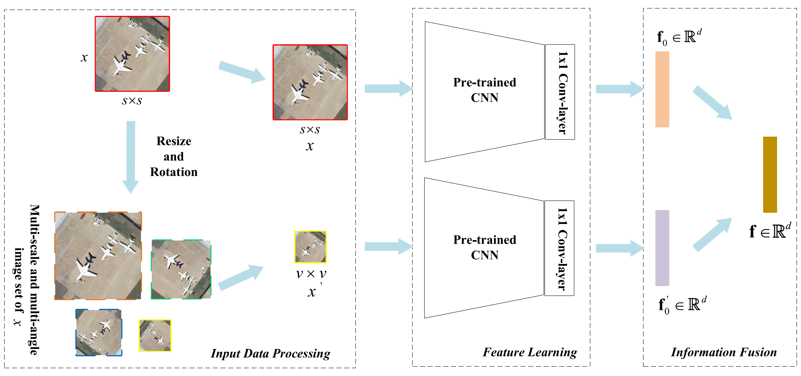

Hand-Object Interaction in the Age of Large Foundation Models: Reconstruction, Generation, and Embodied Transfer
IEEE Transactions on Visualization and Computer Graphics (TVCG), CCF-A · Under review · Repository
Hello! I am Weiquan Lin (林伟权), a PhD student in the School of Artificial Intelligence at Xidian University. I am also part of a joint training program at the Beijing Zhongguancun Academy.
I am currently working with Prof. Xingyu Chen on controllable hand-object interaction and world models. At Xidian University, Prof. Xu Tang, Vice Dean of the School of Artificial Intelligence, has been my master's and doctoral supervisor. My research interests lie at the intersection of robotics, 3D hand-object interaction, and AI agents, with a focus on building intelligent systems that can perceive, reason, and act in the physical world.
Previously, I was an algorithm engineer at CVTE Central Research Institute and a research assistant in the LLM Group at The Hong Kong University of Science and Technology (Guangzhou).
Researchers interested in collaboration are welcome to contact me at s-lwq25@bza.edu.cn.

IEEE Transactions on Visualization and Computer Graphics (TVCG), CCF-A · Under review · Repository

ACM Multimedia (ACM MM), CCF-A · Accepted


IEEE Transactions on Geoscience and Remote Sensing (TGRS), SCI Q1

IEEE Transactions on Geoscience and Remote Sensing (TGRS), SCI Q1
Research Assistant · LLM Group, DSA · Advisor: Prof. Lei Chen
Contributed to the research and development of campus intelligent agents and AI agents for financial invoice processing systems.
Algorithm Engineer · Document Image Analysis & Recognition
Delivered handwriting recognition, multimodal layout analysis, whiteboard element interaction, and AI annotation systems from algorithm research to Seewo (希沃) educational whiteboard and MAXHUB deployment.
Achievements:Micro-innovation awards × 3 · product launch · internal innovation showcases